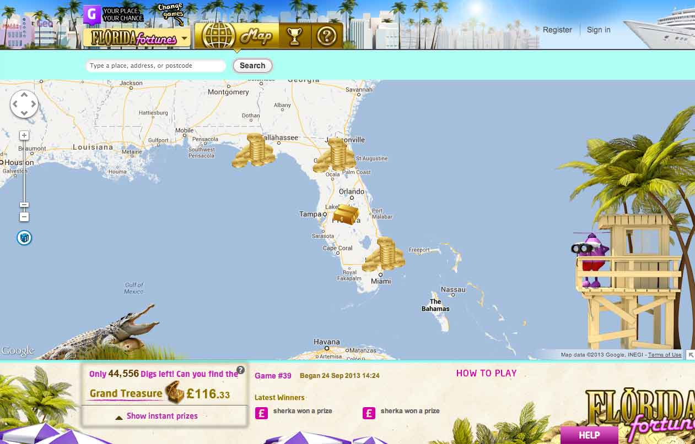

{% include header.html %}

<div class="container">

<h1>Treasure Hunt: 2<sup>nd</sup> Chance</h1>
<p class="lead">Combine scratch tickets with our map-based instant-win game to drive players online</p>

<div class="row">
	<div class="col-xs-12 col-md-12">
			
	</div>
</div><!-- /row -->

<div class="row">
	<div class="col-xs-12 col-md-6">
		<h2>Lose offline, win online</h2>
		<p><strong>Treasure Hunt: 2nd Chance</strong> allows holders of participating non-winning scratch tickets a 'second chance' to win through our engaging online <a href="treasure-hunt.html">instant-win game</a>. Players simply validate the code on their ticket, receive their free credits and 'dig' around on a map see what prizes they can unearth.</p>
	</div>
	<div class="col-xs-12 col-md-6">
		<h2>Invigorate ticket sales, overcome regulations</h2>
		<p><strong>Treasure Hunt: 2nd Chance</strong> provides lotteries a means of offering their players a truly interactive, mobile optimised game in today’s regulatory environment.</p>
	</div>
</div><!-- /row -->

<hr>

<div class="row">
	<div class="col-xs-12 col-md-12">
	<h2>How the 'second chance' game works</h2>
	<p class="lead">The game starts when a player buys a participating scratch ticket in a retail store...</p>
		<p></p>
		<h4>The User's Journey</h4>
		<ol>
			<li>A player buys a participating scratch ticket from a retail store. If he doesn't win, he can use the 2nd Chance access code on the ticket</li>
			<li>The players goes to the game website</li>
			<li>The player logs in or registers then enters their access code(s)</li>
			<li>The player's valid code assigns them a pre-determined outcome, win or lose</li>
			<li>If the player wants to dig again, he buys another ticket</li>
		</ol>
	</div>
</div>

<hr>

<h3>Features</h3>

<div class="row">
	<div class="col-xs-12 col-md-3">
		<h4>Multi-platform Gaming</h4>
		<p>GeoLotto is a browser-based game which runs on internet-standard infrastructure and is widely accessible on a variety of web browsers, including those supported by iPhone, iPad and Android.</p>		
	</div><!-- /col -->
	<div class="col-xs-12 col-md-3">
	<h4>Customised Geos</h4>
		<p>Players can make the game personal to them by customising their Geos. Geos can be given names and taglines, giving players the chance to tell everyone why they chose that location.</p>		
	</div><!-- /col -->
	<div class="col-xs-12 col-md-3">
	<h4>Social Media Integration</h4>
		<p>Not only can players use social media tools to invite their friends to play GeoLotto, they
can use it as a means of boasting about their wins! The in-built “Share My Win” option links GeoLotto to social networking sites, including Facebook and Twitter, allowing for a quick and easy announcement of their win.</p>		
	</div><!-- /col -->
	<div class="col-xs-12 col-md-3">
	<h4>Themed Games</h4>
		<p>Players can participate in exciting themed games, which the lottery can create for promotions. Game-boards can be set over Caribbean Islands, where players play for the chance to win a luxury Caribbean Holiday! Or sports venues can be the focus of a draw by celebrating the Olympics, the Football World Cup or local sporting events. This keeps the game fun and engaging, and gives players the innovation and change they’re looking for!</p>
	</div><!-- /col -->
	<div class="col-xs-12 col-md-3">
		<h4>Flexible Draw Structure</h4>
			<p>We endeavour to offer a game which offers maximum flexibility in allowing lotteries to create prize structures and odds which complement their requirements. A Hardware Random Number Generator is used to select Geos and allocate them to a prize tier.</p>	
	</div><!-- /.col -->
	<div class="col-xs-12 col-md-3">
		<h4>Game board configuration</h4>
			<p>The number of Geos placed over the map is completely configurable, and it’s up to you how many you’d like. We also vary the size of Geos – larger Geos in rural areas, and smaller Geos in urban areas and on points of interest so that more people can be involved in the action! So don’t worry if you’ve got areas of high population density – we will adjust the size of each Geo so that everyone has a fair chance to play. This approach also keeps most of the prize winning Geos concentrated in relevant places!
</p>	
	</div><!-- /.col -->
</div><!-- /row -->

{% include treasure-hunt-custom.html %}
{% include services.html %}

<hr>

{% include benefits.html %}
{% include security.html %}
{% include sales-contact.html %}

</div> <!-- /container -->

{% include footer.html %}